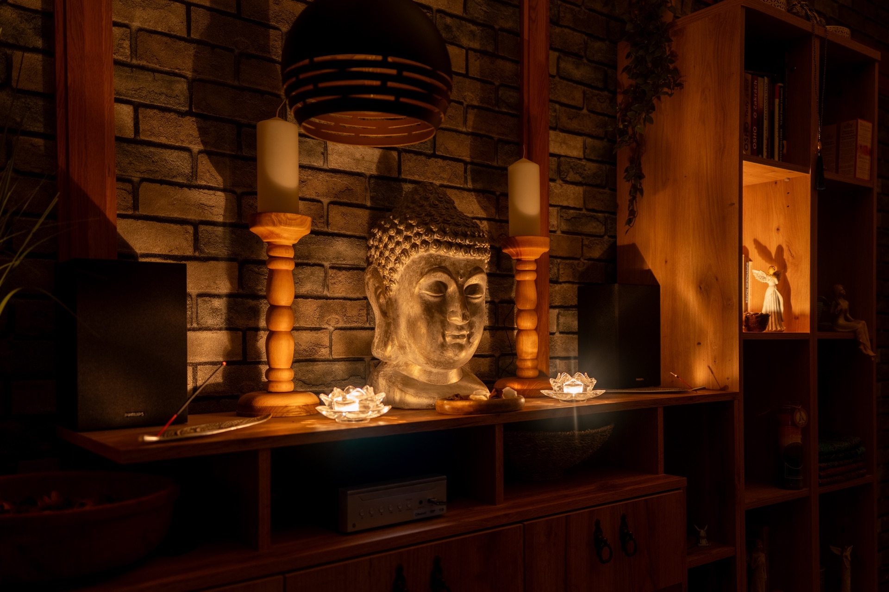

Pomalé místo k vlastnímu středu — bez výkonu, bez cíle. Klenutý prostor, dech, vědomý dotek.
Tantra pro muže, ženy a páry. Délka i hloubka roste s časem — první sezení je vždy úvodní.
Otevírání citlivosti za hranicí výkonu. Pomalý dotek, který učí tělo poslouchat dech místo cíle.
Návrat do těla, do vlastní vůně, do vlastní zemskosti. Pro chvíle, kdy se chcete obejmout vy samy.
Společný rituál pro dva, kteří chtějí prohloubit kontakt. Vedu vás obě těla, ne jenom jedno.
Čtyři hodiny pomalé práce, ticho mezi vámi, společné dýchání, jídlo, doteky. Pro významné mezníky vztahu.
Pracuji v rámci tantrické tradice s jasnými etickými hranicemi. Žádné překvapení, žádný tlak. Vaše tělo zůstává vaše tělo po celou dobu.
Kundalini je jméno pro hluboce vnitřní energetickou cestu, která je v každém těle přítomná — většinu života spí. Probuzení je proces, ne událost.
Sezení vede skrz dech, pomalý dotek a tichá meditativní místa. Není to masáž — je to facilitace toho, co se má dít. Vždy v rámci, který je pro vás bezpečný.
Doporučuji až poté, co máte za sebou alespoň jedno tantrické setkání. Tělo by mělo být na tento typ práce naladěné.

Tělo zná víc, než si myslíte. Doteky jsou jen způsob, jak mu dát čas to říct. — Margot Anand · The Art of Sexual Ecstasy
Tantrický termín se nerezervuje formulářem. Vždy si nejdřív krátce zavoláme — abychom oba věděli, co je v rámci a co ne.
Nemusíte mít „dotazy". Stačí říct, co vás přivedlo.